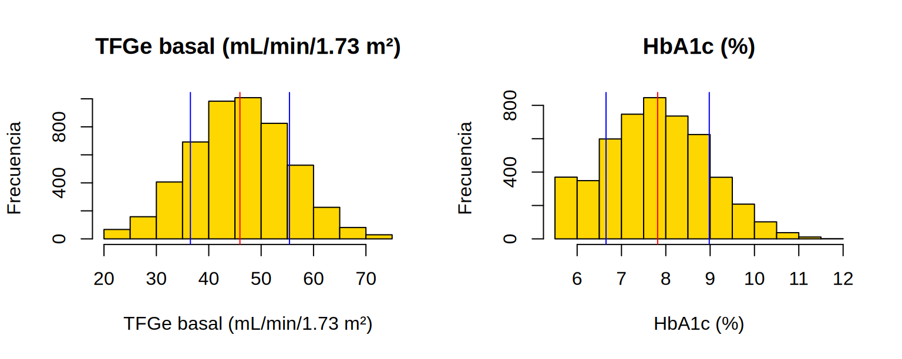

Objetos, funciones y paquetes: tus primeras líneas de código
Nota🩺 Escenario
Tienes la creatinina de cinco pacientes y quieres saber cuántos superan 2 mg/dL, pasarlos a µmol/L y sacar el promedio. En Excel arrastrarías fórmulas; en R escribes la receta una vez y la aplicas a todos a la vez.
Este subcapítulo reúne las cinco ideas con las que se construye todo lo demás: objetos, vectores, tipos de datos, tablas y funciones.
Lo que vamos a hacer
Guardar valores en objetos y operar con ellos.
Trabajar con vectores (muchos valores a la vez) y tablas (tibble).
Usar y crear funciones, y encadenar pasos con el pipe|>.
Instalar y cargar paquetes.
Paso 1: operadores, la “calculadora” de R
R tiene tres familias de operadores. Las comparaciones y las operaciones lógicas devuelven TRUE o FALSE.
Dos detalles que ahorran dolores de cabeza: igualdad se escribe con doble signo (==), porque el = simple asigna; y los paréntesis mandan sobre el orden de las operaciones.
Paso 2: objetos, o cómo ponerle nombre a un valor
Con <- guardas un resultado en un objeto para usarlo después. Léelo como “se guarda en”.
creatinina<-1.8# mg/dLedad<-67# añoscreatinina*88.4# µmol/L (usa el valor guardado)
[1] 159.12
Tip💡 Nombres de objetos
Usa nombres descriptivos, en minúscula, sin espacios ni tildes: tfg_basal, datos_ckd. Evita x1, base nueva, Resultados Final(2). R distingue mayúsculas: Edad y edad son objetos distintos.
Paso 3: vectores, muchos valores con un solo nombre
Un vector es una fila de valores del mismo tipo; se crea con c() (de “concatenar”).
creat<-c(0.9, 1.1, 1.8, 2.4, 3.1)# creatinina de cinco pacientes (mg/dL)creat*88.4# la operación se aplica a TODOS los valores
Qué vemos: una sola línea convierte los cinco valores a µmol/L. A esto se le llama vectorización y es la razón por la que R es tan cómodo con bases de miles de pacientes.
Advertencia⚠️ Un solo NA contamina el promedio
NA es el valor faltante. Si hay uno, las funciones devuelven NA salvo que les pidas ignorarlo:
mean(c(1.2, NA, 3.4))# NA: R no sabe qué hacer con el faltante
[1] NA
mean(c(1.2, NA, 3.4), na.rm =TRUE)# ignora el NA (hazlo sabiendo que lo haces)
[1] 2.3
Ignorar faltantes es una decisión, no un trámite (Cap. 13).
Paso 4: tipos de datos
R distingue el tipo de cada variable, y muchos errores vienen de ahí (un número leído como texto no se puede promediar).
# Un factor guarda categorías; el orden de los niveles lo defines túestadio<-factor(c("G3a", "G3b", "G4", "G3a"), levels =c("G3a", "G3b", "G4"))table(estadio)
estadio
G3a G3b G4
2 1 1
Paso 5: tablas de datos (tibble)
Una base de datos es una tabla: cada fila es un paciente (o una visita) y cada columna una variable. En el tidyverse se llama tibble.
Para llegar a una columna se usa $; para elegir filas, filter() (el Cap. 5 profundiza):
pacientes$creat# una columna
[1] 0.9 1.1 1.8 2.4 3.1
pacientes[2, ]# la fila 2
# A tibble: 1 × 4
id edad creat diabetes
<int> <dbl> <dbl> <lgl>
1 2 71 1.1 FALSE
pacientes|>filter(diabetes)# solo pacientes con diabetes
# A tibble: 3 × 4
id edad creat diabetes
<int> <dbl> <dbl> <lgl>
1 1 58 0.9 TRUE
2 3 64 1.8 TRUE
3 4 80 2.4 TRUE
Paso 6: funciones y el pipe|>
Una función recibe argumentos entre paréntesis y devuelve un resultado: nombre(argumento1, argumento2). El pipe|> se lee “y luego”: pasa lo de la izquierda como primer argumento de la función de la derecha.
# Sin pipe: se lee de dentro hacia fueraround(mean(pacientes$creat[pacientes$diabetes]), 2)
[1] 1.7
# Con pipe: se lee de izquierda a derecha, como una recetapacientes|>filter(diabetes)|># 1) solo con diabetessummarise(creat_media =mean(creat))|># 2) promedio de creatininamutate(creat_media =round(creat_media, 2))# 3) redondear
# A tibble: 1 × 1
creat_media
<dbl>
1 1.7
Paso 7: crear tus propias funciones
Si copias el mismo bloque dos veces, conviene hacer una función. Imagina que tu jefe pide un histograma de la TFGe con su media y desviación estándar… y luego el mismo gráfico para otras 49 variables. Copiar y pegar 50 veces produce errores y es imposible de corregir. Una función se escribe una vez:
# nombre <- function(argumentos) { cuerpo }crear_histograma<-function(datos, nombre){media<-mean(datos, na.rm =TRUE)de<-sd(datos, na.rm =TRUE)hist(datos, main =nombre, xlab =nombre, ylab ="Frecuencia", col ="gold")abline(v =media, col ="red")# media en rojoabline(v =media+c(-1, 1)*de, col ="blue")# ±1 DE en azul}
La usamos con dos variables de la base simulada del libro (la importaremos formalmente en 4.3):
ckd<-read_csv("Bases/ckd_isglt2.csv", show_col_types =FALSE)par(mfrow =c(1, 2))# dos gráficos lado a ladocrear_histograma(ckd$tfg_basal, "TFGe basal (mL/min/1.73 m²)")crear_histograma(ckd$hba1c, "HbA1c (%)")

Figura 1: El mismo código, dos variables (datos simulados). Rojo: media; azul: ±1 DE.
Una función también puede ser pequeña y clínica. Esta clasifica la TFGe en categorías G de KDIGO (la versión completa está en R/funciones_epi.R):
Los paquetes son colecciones de funciones. Se instalan una vez en tu computadora y se cargan en cada sesión en que los uses.
install.packages("survival")# UNA vez por computadoralibrary(survival)# CADA sesión en que lo usessurvival::Surv# alternativa: usar una función sin cargar el paquete (paquete::función)
Cuando no sepas qué hace una función o qué argumentos tiene:
?mean# ayuda de la función meanhelp("t.test")# lo mismo??"regresión"# busca el término en toda la documentación instaladaexample(mean)# ejemplos de uso
Conflictos de nombres. Dos paquetes pueden tener funciones con el mismo nombre (por ejemplo, filter() existe en dplyr y en stats). Al cargar tidyverse verás el aviso “dplyr::filter() masks stats::filter()”: no es un error; R te dice cuál usará. Si algo se comporta distinto a lo esperado, indica el paquete: dplyr::filter().
Importante🎯 En resumen
<- guarda un valor en un objeto; c() crea vectores; las operaciones se aplican a todos los valores a la vez.
El tipo (numérico, texto, factor, fecha) importa: revísalo siempre con class().
Una base es un tibble: filas = pacientes, columnas = variables ($ para una columna).
|> encadena pasos: “y luego”.
Si repites algo, escribe una función.
Instalar (install.packages) una vez; cargar (library) en cada sesión; ?función para pedir ayuda.
Ejercicio
Crea un vector con las TFGe de seis pacientes, calcula su mediana y cuenta cuántos tienen TFGe < 60.
Aplica categoria_g() a ese vector y haz una tabla con table().
Escribe una función umol_a_mgdl() que convierta creatinina de µmol/L a mg/dL, y comprueba que umol_a_mgdl(88.4) da 1.